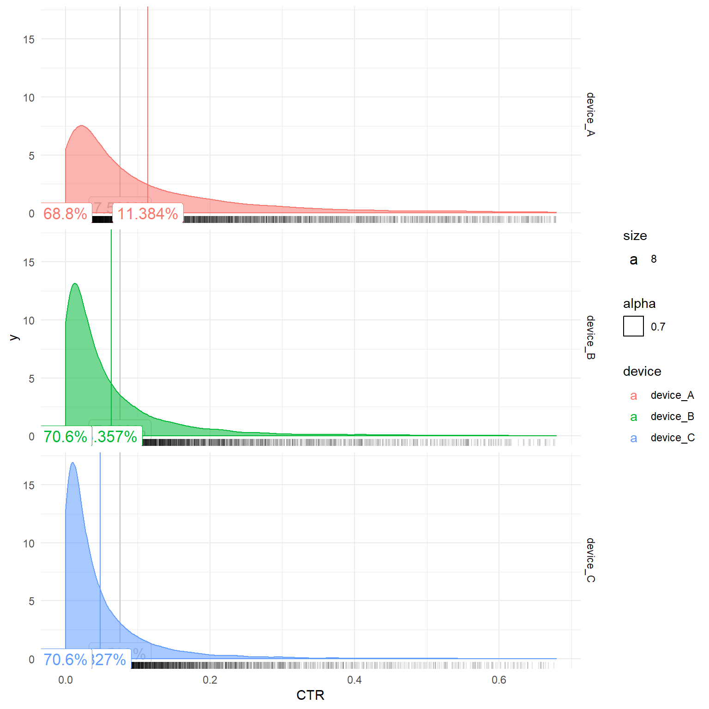

This plot is suppsed to show the distribution of a KPI for different groups. The distribution is weighted e.g. using the impressions to take into account the effect of volume. In addition to that the overall average and average per group is calculated and shown as vertical line. It also shows the % of volume which are lower than average.
This kind of plot was created to help investigating a common topic in (digital) media: Benchmarks
Benchmarks are (at least implicitly) supposed to give an orientation about how “good” or “bad” a given KPI is. However, misconceptions about what benchmarks (commonly calculated as “overall-average”) represent are common. Understanding of the position of the KPI-benchmark compared with the whole distribution of the KPIs is needed.
First, get a report or create some data that represents a typical digital ad report which includes Impressions and Clicks for different campaigns, placements, creative sizes and devices for a given time period. For this demo I use the script in my DataGenerators repository.
The plot is built using ggplot2 and includes layers for a density plot and vertical lines with labels that show means of the KPI. This plot is shown in rows for the defines groups.
library(tidyverse)
tt_plot <- tt %>%
group_by(campaign, placement, creativesize, device, day) %>% # This is a preperation in case we want to remove dimensions later
summarise(sum_clicks = sum(clicks), sum_imp = sum(impressions)) %>% # This is a preperation in case we want to remove dimensions later
mutate(CTR = sum_clicks / sum_imp) %>%
as_tibble()
grouped_means <- tt_plot %>%
group_by(device) %>%
summarise(means = sum(sum_clicks) / sum(sum_imp))
grouped_means_pct <- tt_plot %>%
group_by(device) %>%
mutate(means = sum(sum_clicks) / sum(sum_imp)) %>%
summarise(pct_below = sum(sum_imp[CTR < means], na.rm = TRUE) / sum(sum_imp))
#summarise(pct_below = sum(CTR < means, na.rm = TRUE) / length(means))
tt_plot %>%
group_by(device) %>%
mutate(imp_grp = sum(sum_imp)) %>%
ggplot(aes(CTR, group = device)) + # , group = device
geom_vline(aes(xintercept = (sum(sum_clicks) / sum(sum_imp))), color = "grey") +
geom_label(aes(x = (sum(sum_clicks) / sum(sum_imp)), y = 0.5, label = paste(round((sum(sum_clicks) / sum(sum_imp) * 100), 3),"%", sep = ""), size = 8), color = "grey") +
# geom_histogram(aes(y = stat(density), fill = device, alpha = 0.7), bins = 30) +
geom_density(aes(y = stat(density), weight = sum_imp / imp_grp, color = device, fill = device, alpha = 0.7)) + #, adjust = 1
geom_rug(alpha = 0.1) +
facet_grid(device ~ .) +
geom_vline(data = grouped_means, aes(xintercept = means, color = device)) +
geom_label(data = grouped_means, aes(x = means, y = 0, label = paste(round(means * 100, 3),"%", sep = ""), size = 8, color = device)) +
geom_label(data = grouped_means_pct, aes(x = 0, y = 0, label = paste(round(pct_below * 100, 1), "%", sep = ""), size = 8, color = device)) +
xlim(0, quantile(tt_plot$sum_clicks / tt_plot$sum_imp, probs = .75, na.rm = TRUE) + 4 * IQR(tt_plot$sum_clicks / tt_plot$sum_imp, na.rm = TRUE)) +
theme_minimal()## Warning: Removed 445 rows containing non-finite values (stat_density).## Warning in density.default(x, weights = w, bw = bw, adjust = adjust, kernel
## = kernel, : sum(weights) != 1 -- will not get true density
## Warning in density.default(x, weights = w, bw = bw, adjust = adjust, kernel
## = kernel, : sum(weights) != 1 -- will not get true density
## Warning in density.default(x, weights = w, bw = bw, adjust = adjust, kernel
## = kernel, : sum(weights) != 1 -- will not get true density